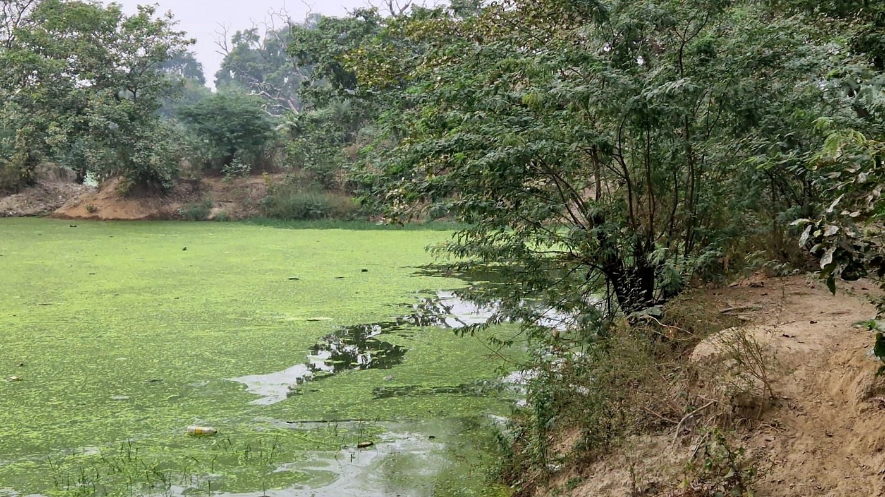
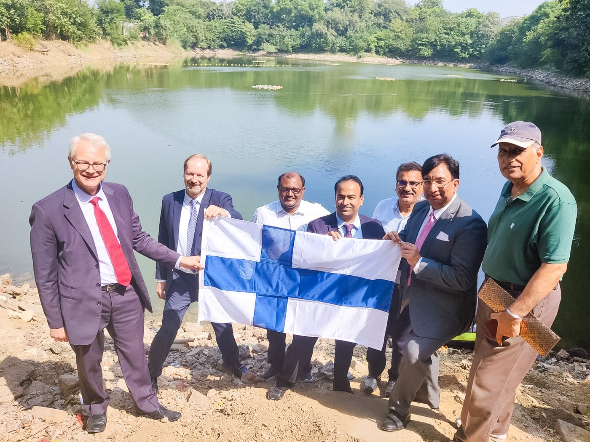
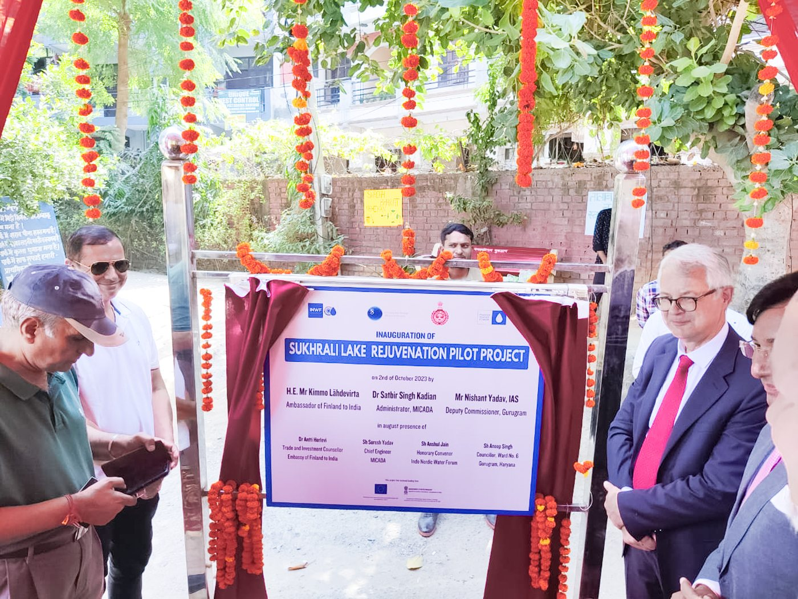

En Sukhrali, Gurugram — Haryana, India — el estanque se había convertido en vertedero de aportes sin tratar: cubierto de algas, orillas erosionadas. Con nuestro socio indio Elixiir, SansOx lo convirtió en el piloto de un programa de recuperación de lagos que ahora se amplía a la aldea de Sadpura.
Fuentes: registros de proyecto de SansOx con Elixiir · páginas de proyecto de sansox.fi.
Así estaba el estanque: cubierta total de algas, agua sin tratar entrando, basura en las orillas. A mediados de los 90 los ríos indios estaban relativamente sanos — el deterioro desde entonces ha sido rápido.

Antes. El estanque de Sukhrali bajo cubierta total de algas. Sin retocar.
Primero se detuvo el aporte sin tratar y se limpiaron las orillas. Después el agua se bombeó a través de OxTubes para disolver aire y elevar el oxígeno disuelto, mientras un tratamiento enzimático natural hacía flotar los sólidos del fondo para recogerlos. La aireación continua con OxTube mantiene el agua clara.
| Medida | Resultado |
|---|---|
| Aporte sin tratar | stopped |
| Oxígeno disuelto | raised — continuous |
| Sólidos del fondo | floated & collected |
| Claridad continua | maintenance contract |
⚠️ Las cifras cuantificadas de OD y claridad se pedirán a Elixiir antes de publicar — esta página recoge por ahora solo hechos de proceso.
| Timeline | Dispatch |
|---|---|
| 2024-04 | Project starts in Sadpura village, Haryana → post |
| 2024-10 | Latest rejuvenation project presented in India → post |
| 2025-02 | News from Sukhrali — water holding clear → post |
| 2026-01 | Another pond to be saved — aeration in action → post |


La delegación con la bandera de Finlandia junto al estanque — y la inauguración de la placa del proyecto. Las instituciones no posan junto a proyectos de los que dudan.
Registro institucional: recuperación ejecutada por MICADA bajo supervisión de la Embajada de Finlandia, financiada a través del Indo-Nordic Water Forum; la Corporación Municipal de Gurugram realiza hoy campañas de mantenimiento; el proyecto se presentó a la Comisión de Comercio del Parlamento finlandés.
Por qué importa: cuatro crónicas en dos años son el contrato de mantenimiento, hecho visible. Un estanque revivido que sigue revivido es la afirmación — la cronología es su recibo.
El programa se amplía a más lagos de Haryana — y el mecanismo escala: la misma aireación que revive un estanque de aldea es lo que nuestra misión de regeneración de la naturaleza propone para aguas eutrofizadas, de la India al mar Báltico.
30 minutos, técnico, gratis. Traiga sus caudales y objetivos.